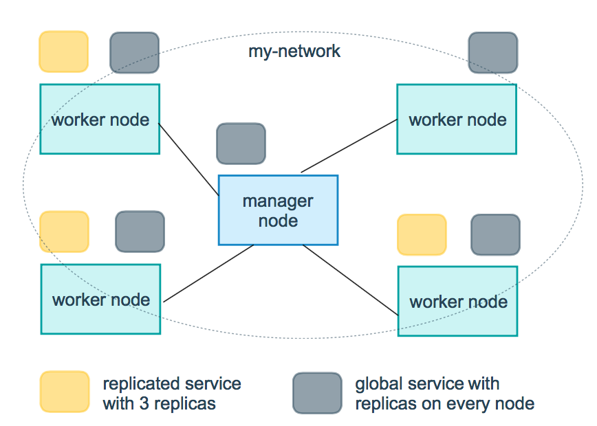

Docker Compose
修改于: 2024-03-06简介
Compose 是用于定义和运行多容器 Docker 应用程序的工具。 通过 Compose，您可以使用 YML 文件来配置应用程序需要的所有服务。 然后，使用一个命令，就可以从 YML 文件配置中创建并启动所有服务。
Compose 使用的三个步骤：
- 使用 Dockerfile 定义应用程序的环境。
- 使用 docker-compose.yml 定义构成应用程序的服务，这样它们可以在隔离环境中一起运行。
- 最后，执行 docker-compose up 命令来启动并运行整个应用程序。
如:
# yaml 配置实例
version: '3'
services:
web:
build: .
ports:
- "5000:5000"
volumes:
- .:/code
- logvolume01:/var/log
links:
- redis
redis:
image: redis
volumes:
logvolume01: {}
安装
可以直接去 github 下载: https://github.com/docker/compose/releases
其实现在, 如果是桌面端, 比如MacOS, 安装的 docker 图形界面就自带 docker-compose:
ll /usr/local/bin/docker-compose lrwxr-xr-x@ 1 yanque admin 62B Dec 6 2022 /usr/local/bin/docker-compose -> /Applications/Docker.app/Contents/Resources/bin/docker-compose
指令选项
| -d | 后台启动 |
| -f | 指定配置文件, 不指定时默认为 docker-compose.yml 注意此选项要紧跟在 docker-compose 后面 |
常用指令
# 以当前目录下的 docker-compose.yml 文件来后台启动应用
$ docker-compose up -d
# 指定当前目录下 docker-compose-me.yml 文件来后台启动应用
$ docker-compose -f docker-compose-me.yml up -d
# 停止并删除所有容器
$ docker-compose down
# 停止指定应用 appName 是需要停止的容器名
$ docker-compose stop appName
准备
创建一个简单的 flask 应用:
$ mkdir composetest $ cd composetest
在测试目录中创建一个名为 app.py 的文件，并复制粘贴以下内容:
import time
import redis
from flask import Flask
app = Flask(__name__)
cache = redis.Redis(host='redis', port=6379)
def get_hit_count():
retries = 5
while True:
try:
return cache.incr('hits')
except redis.exceptions.ConnectionError as exc:
if retries == 0:
raise exc
retries -= 1
time.sleep(0.5)
@app.route('/')
def hello():
count = get_hit_count()
return 'Hello World! I have been seen {} times.\n'.format(count)
在此示例中，redis 是应用程序网络上的 redis 容器的主机名，该主机使用的端口为 6379。 在 composetest 目录中创建另一个名为 requirements.txt 的文件，内容如下:
flask redis
创建 dockerfile
说明见 dockerfile编写
当前测试内容:
FROM python:3.7-alpine WORKDIR /code ENV FLASK_APP app.py ENV FLASK_RUN_HOST 0.0.0.0 RUN apk add --no-cache gcc musl-dev linux-headers COPY requirements.txt requirements.txt RUN pip install -r requirements.txt COPY . . CMD ["flask", "run"]
解释
FROM python:3.7-alpine: 从 Python 3.7 映像开始构建镜像。
WORKDIR /code: 将工作目录设置为 /code。
ENV FLASK_APP app.py ENV FLASK_RUN_HOST 0.0.0.0
设置 flask 命令使用的环境变量。
RUN apk add --no-cache gcc musl-dev linux-headers: 安装 gcc，以便诸如 MarkupSafe 和 SQLAlchemy 之类的 Python 包可以编译加速。
COPY requirements.txt requirements.txt RUN pip install -r requirements.txt
复制 requirements.txt 并安装 Python 依赖项。
COPY . .: 将 . 项目中的当前目录复制到 . 镜像中的工作目录。
CMD ["flask", "run"]: 容器提供默认的执行命令为：flask run。
创建 docker-compose.yml
在测试目录中创建一个名为 docker-compose.yml 的文件，然后粘贴以下内容:
# yaml 配置
version: '3'
services:
web:
build: .
ports:
- "5000:5000"
redis:
image: "redis:alpine"
该 Compose 文件定义了两个服务：web 和 redis。
- web：该 web 服务使用从 Dockerfile 当前目录中构建的镜像。然后，它将容器和主机绑定到暴露的端口 5000。此示例服务使用 Flask Web 服务器的默认端口 5000 。
- redis：该 redis 服务使用 Docker Hub 的公共 Redis 映像。
使用 Compose 命令构建和运行您的应用
在测试目录中，执行以下命令来启动应用程序:
docker-compose up
如果你想在后台执行该服务可以加上 -d 参数:
docker-compose up -d
yml 配置指令参考
- version
- 指定本 yml 依从的 compose 哪个版本制定的。
- build
指定为构建镜像上下文路径：
例如 webapp 服务，指定为从上下文路径 ./dir/Dockerfile 所构建的镜像:
version: "3.7" services: webapp: build: ./dir或者，作为具有在上下文指定的路径的对象，以及可选的 Dockerfile 和 args:
version: "3.7" services: webapp: build: context: ./dir dockerfile: Dockerfile-alternate args: buildno: 1 labels: - "com.example.description=Accounting webapp" - "com.example.department=Finance" - "com.example.label-with-empty-value" target: prod- context：上下文路径。
- dockerfile：指定构建镜像的 Dockerfile 文件名。
- args：添加构建参数，这是只能在构建过程中访问的环境变量。
- labels：设置构建镜像的标签。
- target：多层构建，可以指定构建哪一层。
- cap_add，cap_drop
添加或删除容器拥有的宿主机的内核功能。
- cap_add:
- ALL # 开启全部权限
- cap_drop:
- SYS_PTRACE # 关闭 ptrace权限
- cgroup_parent
为容器指定父 cgroup 组，意味着将继承该组的资源限制:
cgroup_parent: m-executor-abcd
- command
覆盖容器启动的默认命令:
command: ["bundle", "exec", "thin", "-p", "3000"]
- container_name
指定自定义容器名称，而不是生成的默认名称:
container_name: my-web-container
- depends_on
设置依赖关系。
- docker-compose up ：以依赖性顺序启动服务。在以下示例中，先启动 db 和 redis ，才会启动 web。
- docker-compose up SERVICE ：自动包含 SERVICE 的依赖项。在以下示例中，docker-compose up web 还将创建并启动 db 和 redis。
- docker-compose stop ：按依赖关系顺序停止服务。在以下示例中，web 在 db 和 redis 之前停止。
如:
version: "3.7" services: web: build: . depends_on: - db - redis redis: image: redis db: image: postgres注意：web 服务不会等待 redis db 完全启动 之后才启动。
- deploy
指定与服务的部署和运行有关的配置。只在 swarm 模式下才会有用:
version: "3.7" services: redis: image: redis:alpine deploy: mode：replicated replicas: 6 endpoint_mode: dnsrr labels: description: "This redis service label" resources: limits: cpus: '0.50' memory: 50M reservations: cpus: '0.25' memory: 20M restart_policy: condition: on-failure delay: 5s max_attempts: 3 window: 120s
可选参数
- endpoint_mode
访问集群服务的方式:
endpoint_mode: vip # Docker 集群服务一个对外的虚拟 ip。所有的请求都会通过这个虚拟 ip 到达集群服务内部的机器。 endpoint_mode: dnsrr # DNS 轮询（DNSRR）。所有的请求会自动轮询获取到集群 ip 列表中的一个 ip 地址。
- labels
- 在服务上设置标签。可以用容器上的 labels（跟 deploy 同级的配置） 覆盖 deploy 下的 labels。
- mode：指定服务提供的模式。
- replicated：复制服务，复制指定服务到集群的机器上。
- global：全局服务，服务将部署至集群的每个节点。
图解：下图中黄色的方块是 replicated 模式的运行情况，灰色方块是 global 模式的运行情况。
- replicas
- mode 为 replicated 时，需要使用此参数配置具体运行的节点数量。
- resources
- 配置服务器资源使用的限制，例如上例子，配置 redis 集群运行需要的 cpu 的百分比 和 内存的占用。避免占用资源过高出现异常。
- restart_policy
配置如何在退出容器时重新启动容器。
- condition：可选 none，on-failure 或者 any（默认值：any）。
- delay：设置多久之后重启（默认值：0）。
- max_attempts：尝试重新启动容器的次数，超出次数，则不再尝试（默认值：一直重试）。
- window：设置容器重启超时时间（默认值：0）。
- rollback_config
配置在更新失败的情况下应如何回滚服务。
- parallelism：一次要回滚的容器数。如果设置为0，则所有容器将同时回滚。
- delay：每个容器组回滚之间等待的时间（默认为0s）。
- failure_action：如果回滚失败，该怎么办。其中一个 continue 或者 pause（默认pause）。
- monitor：每个容器更新后，持续观察是否失败了的时间 (ns|us|ms|s|m|h)（默认为0s）。
- max_failure_ratio：在回滚期间可以容忍的故障率（默认为0）。
- order：回滚期间的操作顺序。其中一个 stop-first（串行回滚），或者 start-first（并行回滚）（默认 stop-first ）。
- update_config
配置应如何更新服务，对于配置滚动更新很有用。
- parallelism：一次更新的容器数。
- delay：在更新一组容器之间等待的时间。
- failure_action：如果更新失败，该怎么办。其中一个 continue，rollback 或者pause （默认：pause）。
- monitor：每个容器更新后，持续观察是否失败了的时间 (ns|us|ms|s|m|h)（默认为0s）。
- max_failure_ratio：在更新过程中可以容忍的故障率。
- order：回滚期间的操作顺序。其中一个 stop-first（串行回滚），或者 start-first（并行回滚）（默认stop-first）。
注：仅支持 V3.4 及更高版本。
- devices
指定设备映射列表:
devices: - "/dev/ttyUSB0:/dev/ttyUSB0"
- dns
自定义 DNS 服务器，可以是单个值或列表的多个值:
dns: 8.8.8.8 dns: - 8.8.8.8 - 9.9.9.9
- dns_search
自定义 DNS 搜索域。可以是单个值或列表:
dns_search: example.com dns_search: - dc1.example.com - dc2.example.com
- entrypoint
覆盖容器默认的 entrypoint:
entrypoint: /code/entrypoint.sh
也可以是以下格式:
entrypoint: - php - -d - zend_extension=/usr/local/lib/php/extensions/no-debug-non-zts-20100525/xdebug.so - -d - memory_limit=-1 - vendor/bin/phpunit- env_file
从文件添加环境变量。可以是单个值或列表的多个值:
env_file: .env
也可以是列表格式:
env_file: - ./common.env - ./apps/web.env - /opt/secrets.env
- environment
添加环境变量。您可以使用数组或字典、任何布尔值， 布尔值需要用引号引起来，以确保 YML 解析器不会将其转换为 True 或 False:
environment: RACK_ENV: development SHOW: 'true'
- expose
暴露端口，但不映射到宿主机，只被连接的服务访问。 仅可以指定内部端口为参数:
expose: - "3000" - "8000"
- extra_hosts
添加主机名映射。类似 docker client --add-host:
extra_hosts: - "somehost:162.242.195.82" - "otherhost:50.31.209.229"
以上会在此服务的内部容器中 /etc/hosts 创建一个具有 ip 地址和主机名的映射关系:
162.242.195.82 somehost 50.31.209.229 otherhost
- healthcheck::
用于检测 docker 服务是否健康运行:
healthcheck: test: ["CMD", "curl", "-f", "http://localhost"] # 设置检测程序 interval: 1m30s # 设置检测间隔 timeout: 10s # 设置检测超时时间 retries: 3 # 设置重试次数 start_period: 40s # 启动后，多少秒开始启动检测程序
- image
指定容器运行的镜像。以下格式都可以:
image: redis image: ubuntu:14.04 image: tutum/influxdb image: example-registry.com:4000/postgresql image: a4bc65fd # 镜像id
- logging
服务的日志记录配置
- driver
指定服务容器的日志记录驱动程序，默认值为json-file。有以下三个选项
- driver: "json-file"
- driver: "syslog"
- driver: "none"
仅在 json-file 驱动程序下，可以使用以下参数，限制日志得数量和大小:
logging: driver: json-file options: max-size: "200k" # 单个文件大小为200k max-file: "10" # 最多10个文件当达到文件限制上限，会自动删除旧得文件。
syslog 驱动程序下，可以使用 syslog-address 指定日志接收地址:
logging: driver: syslog options: syslog-address: "tcp://192.168.0.42:123"- network_mode
设置网络模式:
network_mode: "bridge" network_mode: "host" network_mode: "none" network_mode: "service:[service name]" network_mode: "container:[container name/id]"
networks 配置容器连接的网络，引用顶级 networks 下的条目
services: some-service: networks: some-network: aliases: - alias1 other-network: aliases: - alias2 networks: some-network: # Use a custom driver driver: custom-driver-1 other-network: # Use a custom driver which takes special options driver: custom-driver-2aliases ：同一网络上的其他容器可以使用服务名称或此别名来连接到对应容器的服务。
- restart
- no：是默认的重启策略，在任何情况下都不会重启容器。
- always：容器总是重新启动。
- on-failure：在容器非正常退出时（退出状态非0），才会重启容器。
- unless-stopped：在容器退出时总是重启容器，但是不考虑在Docker守护进程启动时就已经停止了的容器
如:
restart: "no" restart: always restart: on-failure restart: unless-stopped
注：swarm 集群模式，请改用 restart_policy。
- secrets
存储敏感数据，例如密码:
version: "3.1" services: mysql: image: mysql environment: MYSQL_ROOT_PASSWORD_FILE: /run/secrets/my_secret secrets: - my_secret secrets: my_secret: file: ./my_secret.txt- security_opt
修改容器默认的 schema 标签:
security-opt： - label:user:USER # 设置容器的用户标签 - label:role:ROLE # 设置容器的角色标签 - label:type:TYPE # 设置容器的安全策略标签 - label:level:LEVEL # 设置容器的安全等级标签
- stop_grace_period
指定在容器无法处理 SIGTERM (或者任何 stop_signal 的信号)，等待多久后发送 SIGKILL 信号关闭容器:
stop_grace_period: 1s # 等待 1 秒 stop_grace_period: 1m30s # 等待 1 分 30 秒
默认的等待时间是 10 秒。
- stop_signal
设置停止容器的替代信号。默认情况下使用 SIGTERM 。 以下示例，使用 SIGUSR1 替代信号 SIGTERM 来停止容器:
stop_signal: SIGUSR1
- sysctls
设置容器中的内核参数，可以使用数组或字典格式:
sysctls: net.core.somaxconn: 1024 net.ipv4.tcp_syncookies: 0 sysctls: - net.core.somaxconn=1024 - net.ipv4.tcp_syncookies=0
- tmpfs
在容器内安装一个临时文件系统。可以是单个值或列表的多个值:
tmpfs: /run tmpfs: - /run - /tmp
- ulimits
覆盖容器默认的 ulimit:
ulimits: nproc: 65535 nofile: soft: 20000 hard: 40000- volumes
将主机的数据卷或着文件挂载到容器里:
version: "3.7" services: db: image: postgres:latest volumes: - "/localhost/postgres.sock:/var/run/postgres/postgres.sock" - "/localhost/data:/var/lib/postgresql/data"
参考: 菜鸟教程
yml文件存在多行配置
使用 "|" 表示是多行配置
如
environment:
TZ: 'Asia/Shanghai'
# | 表示下面配置是多行配置
GITLAB_OMNIBUS_CONFIG: |
nginx['listen_addresses'] = ['127.0.0.1','*', '[::]']
# 开启 https
nginx['listen_port'] = 443
external_url 'https://192.168.1.108:8443'
nginx['redirect_http_to_https'] = true
# 将 80 端口的转发到 external_url/url
nginx['redirect_http_to_https_port'] = 80